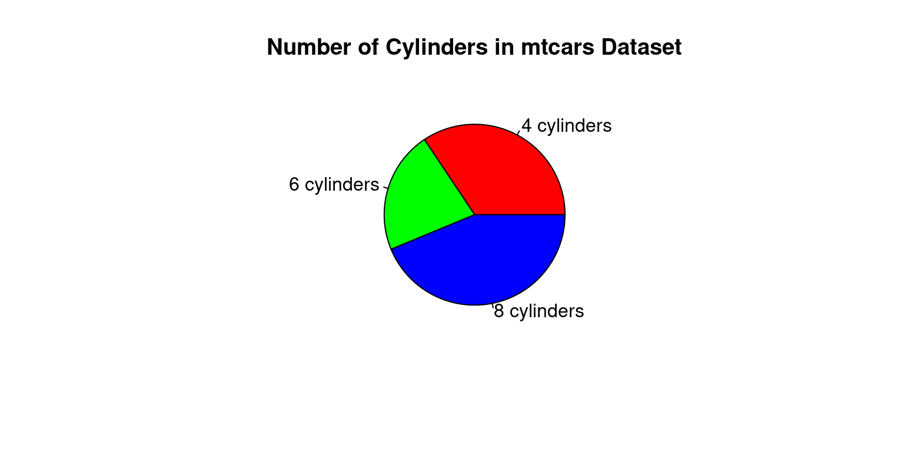
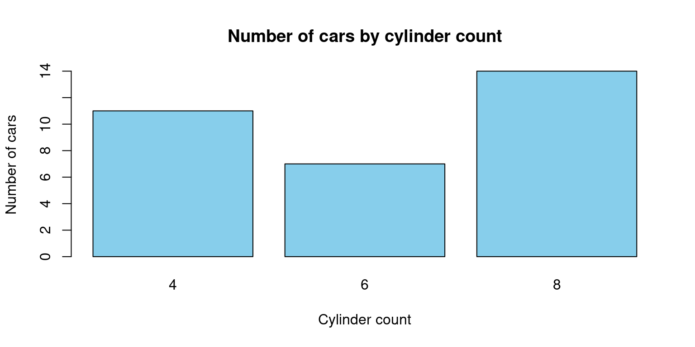

data(mtcars)
attach(mtcars)
t0 = table(cyl)
t0cyl
4 6 8
11 7 14 
July 26, 2023 V1.3 (Work in progress)
Categorical data is a type of data that can be divided into categories or groups.
Text labels or categorical codes like “male” and “female,” “red,” “green,” and “blue,” or “A,” “B,” and “C” are frequently used to describe category data. There are several typical examples of categorical data.:
Nominal and ordinal data are two types of categorical data.
Nominal data is a type of categorical data that has no inherent order or numerical value.
There are several ways to summarize categorical data in R.
table() function: The frequency table for a categorical vector is returned by the table() function.
data(mtcars)
attach(mtcars)
t0 = table(cyl)
t0cyl
4 6 8
11 7 14 summary()summary(cyl) Min. 1st Qu. Median Mean 3rd Qu. Max.
4.000 4.000 6.000 6.188 8.000 8.000 prop.tablep0 = prop.table(table(cyl))
p0cyl
4 6 8
0.34375 0.21875 0.43750 The prop.table() function is used in this example to determine the percentage of each category in the cyl variable of the mtcars dataset. The fraction of cars with 4, 6, and 8 cylinders, respectively, is represented in the resulting vector p0. For instance, the dataset contains cars with 4 cylinders in 34.375% of the cases.
round()
r1 = round(p0*100,2)
r1cyl
4 6 8
34.38 21.88 43.75 In this example, we round the proportion tables p0 and p1 to two decimal places using the round() method. The proportion of each category or group of categories, rounded to two decimal places, is presented in the ensuing tables r1 and r2. For instance, 56.25% of automobiles have an automated transmission and 8 cylinders.
A pie chart is a circular graph with wedges or slices cut out of it, each of which represents a certain percentage of the entire. Each slice’s size reflects the value it represents, while the chart’s overall area reflects the sum of all values.
Pie charts are frequently used to display percentages or proportions of a whole or the relative sizes of various categories. They are very helpful for displaying data with few categories or when highlighting a single category or value.
# Count the number of cars with each number of cylinders
cyl_counts <- table(mtcars$cyl)
# Create a pie chart
pie(cyl_counts, main = "Number of Cylinders in mtcars Dataset",
labels = c("4 cylinders", "6 cylinders", "8 cylinders"),
col = c("red", "green", "blue"))
The occurrences of each value of the cyl variable in the mtcars dataset are counted in this code using the table() function, and the resulting table is saved as cyl counts. The cyl counts variable provides the data for the pie chart, which is subsequently created using the pie() function. The chart’s title is determined by the main argument, while the labels argument assigns unique labels to the chart’s slices. The colours of the slices are specified by the col argument.
# Load the mtcars dataset
data(mtcars)
# Create a table of the counts of cars by number of cylinders
cyl_table <- table(mtcars$cyl)
# Create a barplot of the table
barplot(cyl_table,
main = "Number of cars by cylinder count",
xlab = "Cylinder count",
ylab = "Number of cars",
col = "skyblue")
By dividing the number of automobiles by the number of cylinders in the mtcars dataset, this code will produce a barplot. The barplot() function is used to generate the actual plot, while the table() function is used to generate a table of counts for the cyl variable in the mtcars dataset. The title and axis labels are added using the main, xlab, and ylab arguments, and the colour of the bars is altered with the col option.
Healy, K., & Lenard, M. T. (2014). A practical guide to creating better looking plots in R. University of Oregon. https://escholarship.org/uc/item/07m6r
Few, S. (2004). Show me the numbers: Designing tables and graphs to enlighten. Analytics Press.
Friendly, M. (1994). Mosaic displays for multi-way contingency tables. Journal of the American Statistical Association, 89(425), 190-200.